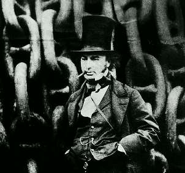

Борис Акунин
Мой календарь
Самое интересное человеческое качество - изобретательность. Самые интересные люди - изобретатели, художники прогресса. Без них у нас ничего бы не было, человечество даже не придумало бы, как добывать огонь. Мы живем в мире предметов и удобств, у каждого из которых когда-то был первооткрыватель, просто большинство из них безымянны и забыты.
Сегодня день рождения, наверное, самого прославленного в истории изобретателя, британского инженера Исамбарда Брюнеля (1806–1859), главной звезды европейской Промышленной революции. Несколько лет назад БиБиСи провело опрос «Сто самых великих британцев», так Брюнель занял там второе место после Черчилля (но впереди Шекспира и Дарвина).
Он был автором множества пионерских проектов в железнодорожном строительстве, сооружал небывалые висячие мосты, провел туннель под Темзой, спускал на воду огромные корабли, разработал первую в мире архитектурную конструкцию из стекла и металла.
Брюнелю хотелось для всего на свете изобрести какую-нибудь машину. Некоторые были дурацкими, но это творческого человека не останавливало - он изобретал, как дышал. Однажды, развлекая своих детей фокусами, великий инженер по случайности проглотил монету, которая застряла у него в трахее. Что сделал Брюнель? Немедленно придумал машину для вибрационного извлечения монет, застрявших в трахеях. Машина, правда, не сработала. Скучные, неизобретательные люди просто перевернули Брюнеля вверх ногами, потрясли, и монета выскочила.
Попробуйте сегодня что-нибудь изобрести. Необязательно техническое. Но обязательно что-нибудь такое, чего раньше не было.